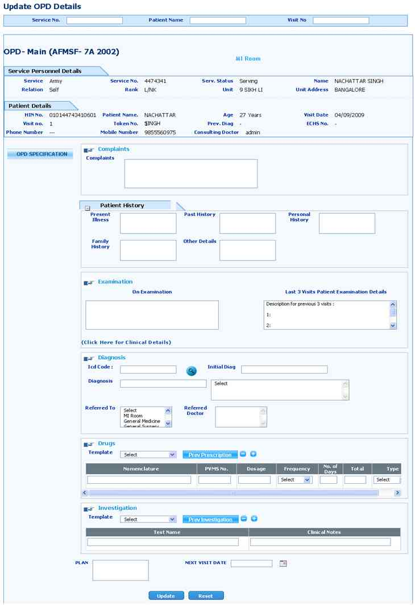

Update OPD Details
Screen Overview
This screen will capture OPD patient visit modify the existing visit details.

Service No:
User can write service number, it can’t remain blank.
Patient Name:
Based on Service number all patient detail will display in the list. User can select from the list.
Visit No:
Based on Service number and patient name patient all visits list will display in the list. User can select visit number from the list.
Complaints:
Based on user visit selection doctor prescribed complaints details will appear and user can modify existing data.
Patient History:
Present Illness:
Based on user visit selection doctor prescribed present illness details will appear and user can modify existing data.
Past History:
Based on user visit selection doctor prescribed past history details will appear and user can modify existing data.
Personnel History:
Based on user visit selection doctor prescribed personnel history details will appear and user can modify existing data.
Family History:
Based on user visit selection doctor prescribed personnel history details will appear and user can modify existing data.
Other Details:
Based on user visit selection doctor prescribed other details will appear and user can modify existing data.
On Examination:
Based on user visit selection doctor prescribed on examination details will appear and user can modify existing data.
Last 3 Visits Patient Examination:
User can views last 3 visits patient examination details and user can copy the last visit details and paste the details in on examination column.
Clinical Details:
Disposal:
Based on user visit selection disposal details will appear and user can modify existing data.
Height:
Based on user visit selection height details will appear and user can modify existing data.
Weight:
Based on user visit selection weight details will appear and user can modify existing data.
Pulse:
Based on user visit selection pulse details will appear and user can modify existing data.
Temperature:
Based on user visit selection pulse details will appear and user can modify existing data.
BP:
Based on user visit selection height details will appear and user can modify existing data.It should be MAX/MIN format.
Diagnosis:
ICD Code:
Based on user visit selection all diagnosis details will appear and user can modify existing data.
User knows ICD code user can write ICD code then ICD Name will come automatically.
Diagnosis:
User knows ICD name user can write ICD name then ICD Name will display accordingly user type then user can select one.
User can write multiple diseases, user can write more than one.
Working Diagnosis:
Based on user visit selection working diagnosis details will appear and user can modify existing data.
Ser can enter any diseases details other than ICD code or ICD name.
Referred To:
Based on user visit selection referred department details will appear and user can modify existing data.
Referred Doctors:
Based on user visit selection referred doctors details will appear and user can modify existing data.
User want to refer case to other doctors then user can select doctors from the list.
Doctor’s list will display based on selected departments. User can select multiple doctors from the list.
Drugs:
Template:
Based on user visit selection drug details will appear and user can modify existing data.
User can select the pre defined templates from the given list, it can remain blank. And it is generated department wise.
Prev Prescription (Button):
User can select previous visits drug prescription and user can repeat the same medicine.
Investigation:
Template:
Based on user visit selection investigation details will appear and user can modify existing data.
User can select the pre defined templates from the given list, it can remain blank. And it is generated department wise.
Prev Prescription (Button):
User can select previous visits investigation prescription and user can repeat the same tests.
Plan:
Based on user visit selection patient treatment plan details will appear and user can modify existing data.
Next Visit Date:
Based on user visit selection patient next visit date details will appear and user can modify existing data.
Update (Button):
By clicking on update button user can save the data.
Reset (Button):
Clicking on reset button, will clear the current or existing data.